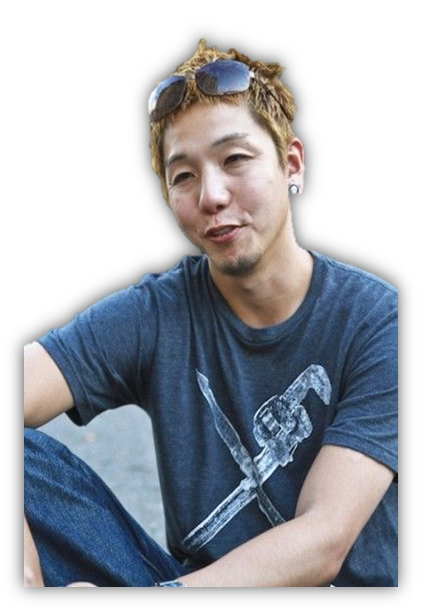

Biografia

Naoto Hattori nació en 1975 en Yokohama, Japón. Estudió diseño gráfico en Tokyo antes de trasladarse a New York a estudiar en la Escuela de Artes Visuales. En el año 2000 recibió su Licenciatura en Ilustración.
Ha sido premiado por la Sociedad de Ilustradores, El New York Directors Club, Communication Arts y ha ganado numerosos reconocimientos en varias competiciones. Su trabajo ha sido publicado por una gran cantidad de revistas.
Sobre su trabajo dice: "Mi visión es como un sueño, ya sea un dulce sueño, una pesadilla o sólo un sueño irreal. Intento ver qué es lo que realmente sucede en mi mente y ésta práctica incrementa mi conciencia de la creatividad en las corrientes de pensamiento subyacente. Intento no etiquetar o pensar acerca de lo que se supone que es, simplemente tomarlo tal como es y pintar lo que veo en mi mente sin compromisos. Así es como creo mi propia visión ".
Las obras de Naoto Hattori pueden parecer a primera vista realizadas por medios digitales, pero son trabajos a puro pincel, generalmente utilizando acrílicos. Composiciones con elementos surrealistas y extraños seres, muchas veces jugando con la ironía, parodiando personajes u obras de arte de los clásicos. Destacan los paisajes, casi siembre verdes praderas y arrozales con árboles y montañas de fondo.
"Nunca he visto un extraterrestre, y no son alienígenas los que pinto, pero he visto y creado mi propio mundo en mi cabeza desde que era un niño. Ahora tengo habilidades que me permiten expresar lo que veo en mis visiones (...) Mi propio arte es aún una continua educación desde mis clases de dibujo en el kinder, simplemente pinto lo que quiero. Puede parecer extraño a mucha gente, pero ¿quién sabe qué está dando vuelas en sus cabezas?"
El arte para Naoto Hattori no tiene límite, ni regla, ni discriminación de superioridad. Como resultado, el arte permite a las personas expresarse libremente. Cuando pinto sobre un lienzo en blanco, me siento como un creador, un dios. Al dar gradualmente vidas a las criaturas en un espacio donde nadie más existe, creo mi propio mundo. El arte es un mundo donde puedo, increíblemente, expresar libremente todo y cualquier cosa.